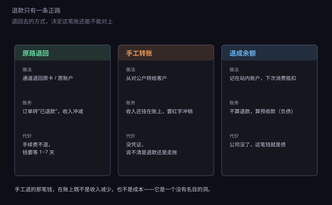
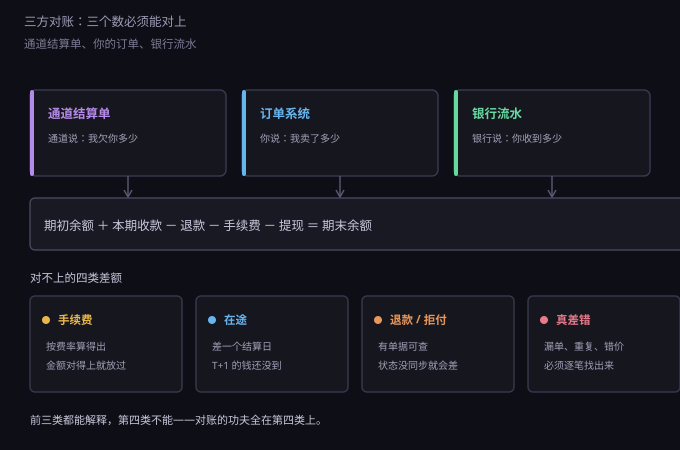
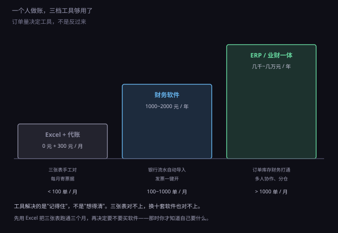

约 0.33 万字 · 3 张图 · 钱退回去的路，和三个必须对上的数
用户要退钱，你手上有三种做法：原路退回、手工转账、退成站内余额。
看起来三种都能让用户满意，实际上只有第一种能让账还是账。

原路退回，是调通道的退款接口，把钱退到用户原来付款的那张卡或那个账户里。 这一动作会在通道侧生成一条退款记录，结算单上多一行负数， 你的订单状态从"已支付"变成"已退款"，收入自动冲减。 三个系统同时动，账自然是对得上的。
手工转账，是从公司对公账户直接转给用户。 钱确实出去了，但在通道那边，这笔订单还是"已支付"。 于是你的账上会出现一笔永远对不上的收入：钱收了、货退了、钱又付了， 可收入科目没减、成本没冲、税金照交。
要做对，得让会计手工做一笔红字冲销。而红字冲销需要凭证： 你凭什么说这笔转账是退款？一张微信聊天记录？一条转账备注"退款"？ 税务检查的时候，这些都不够。
退成余额是第三种，很多小平台喜欢用，因为它不出现金流出。 但会计上它根本不是退款：用户的钱还在你这里，你欠他一笔服务， 这是一笔预收款，是负债。
负债不确认收入，等用户下次消费才确认。这听起来挺合理， 但它有个后果：这笔钱你不能算成自己的。 公司清算的时候，它是排在股东前面的债。
上面那段可能有点抽象，换个具体场景。
用户买了 100 元的会员，用了一周要退。你从对公户转他 100 元，备注写"退款"。
一个月后你算账：收入 100，成本 0，利润 100。 但实际这笔生意一分没赚，还倒贴了通道手续费。 账上的 100 元利润会变成企业所得税的计税基础——你为一笔没赚到的钱交了税。
如果这种手工退款一个月有二十笔，你的账就和现实差了两千。 差得多了，人就会开始"估"，一估，账就废了。
更麻烦的是发票。这笔 100 元如果开过发票，退款时必须开红字发票冲销， 而不是把发票收回来撕掉。红字发票要在系统里申请、要填原因， 手工退款没有这条链路，发票就挂在那里，永远冲不掉。
所以规矩很简单：能原路退的，一律原路退。 原路退不了的（卡注销、超期、通道故障），走人工流程，但必须留下三样东西： 退款申请单、用户确认、会计的红字凭证。三样缺一，这笔钱在账上就是不明支出。
退款还有两个技术细节，做之前必须知道。
第一，手续费不退。 用户退 100 元，你退给他 100 元，但那 0.6 元手续费通道不还给你。 上一节算过：退货率 10%，真实费率就从 0.6% 变成 0.667%。 部分通道对大额退款会按比例返还一部分，接入前要问清楚，别默认。
第二，有时限。 多数通道支持交易后一年内退款，超过就走人工。 跨境通道更短，信用卡组织一般给 180 天。 这意味着你的订单表里必须存"可退款截止时间"，而不是等用户来了再算。
退款到账时间也不一样：退到余额或零钱是即时的，退到银行卡要一到三个工作日， 跨境卡可能五到十个工作日。客服话术里写"退款已提交，三到五个工作日到账"， 比写"已退款"少一半投诉——因为用户看到的是银行短信，不是你后台的状态。
还有一个常被忽略的情况：退款失败。 用户那张卡注销了、过期了，通道退不回去，钱会挂在"退款失败"状态。 这时候不能装作没发生，得转成人工处理，并且在账上留一笔"待退款项"。 否则这笔钱就变成了你的收入——法律上不是。
对账这个词听着专业，其实只做一件事：让三个来源说同一句话。

第一个来源是通道结算单。微信支付、支付宝、Stripe 后台都能导出， 一行一笔，带交易号、金额、手续费、结算批次。它是权威数据，因为它决定钱实际怎么走。
第二个来源是你的订单系统。每笔订单的金额、状态、时间。 它是业务数据，反映"应该收多少"。
第三个来源是银行流水。对公账户里实际进出的钱，带摘要和对方户名。 它是最终事实，因为它不可篡改。
三者之间有一个恒等式：
期初余额 ＋ 本期收款 － 退款 － 手续费 － 提现 ＝ 期末余额
这个式子左边是通道口径，右边是通道余额。换成银行口径就是： 期初 ＋ 提现到账 － 银行手续费 ＝ 期末。 两个式子各自成立，再把中间的"提现"接上，三边就闭环了。
所以对账不是"看一眼总数差不多就行"，而是把这条链上的每个箭头都验一遍。 任何一处断开，后面全是猜的。
实际操作里，三个数很少有完全相等的时候。差额通常落在四类里。
第一类，手续费。 订单金额减去到账金额，差额应该刚好等于费率。 算一遍对得上，这一类就放过，不用逐笔看。
第二类，在途。 差一个结算日。今天的收款明天才到，月末最后一天的流水必然对不上。 判断方法：把时间窗口错开一天再对一次，如果差额消失，就是在途。
第三类，退款和拒付。 有单据可查。退款在通道侧有记录，拒付在银行侧有通知。 这类差额只要找到单号就能解释，麻烦的是状态没同步—— 通道已经退了，你的系统还显示"已支付"。
第四类，真差错。 前三类都排除了，还剩差额，那就是漏单、重复或者错价。 这一类不能"下个月再说"，必须逐笔找出来，因为它是系统性问题，会重复发生。
对账的功夫，全在第四类上。前三类是体力活，第四类是脑力活。
很多人一想到对账就头疼，是因为攒到月底一起做。 一个月几千行，肉眼对，对到第三个小时就开始"目测"了。
正确的节奏是三层。
每天十分钟。 只做一件事：把昨天的收款笔数和金额，跟订单系统里"已支付"的笔数和金额比一下。 笔数不一致，当天就查；金额差得超过手续费范围，当天就查。 数据量小的时候，问题一眼就能看见。
每周一次小结算。 把这一周所有退款、拒付、异常订单列出来，逐笔确认状态。 顺便看一眼"待结算"池子的余额是不是符合预期。
每月一次大对账。 导出上月通道结算单、订单表、银行流水，按恒等式跑一遍。 这一步可以交给代账公司，但你自己至少要看得懂那张表。
技术上有两个东西能让这件事变简单。 一是唯一键：订单号、通道交易号、结算批次号，三个 ID 都要存，缺一个就得靠金额和时间猜。 二是自动比对脚本：拿订单号做 join，差集就是问题清单。 这个脚本一百行以内，写一次能用三年。
第四类差额看起来是财务问题，实际上九成是技术问题。三种最常见。
漏单。 用户付了钱，你的系统没收到通知。原因是回调丢了： 服务器正好在重启、接口超时返回了 502、防火墙拦了通道的 IP。 用户那边扣了款，你这边订单还是"待支付"。
解法是主动查单：定时任务把"待支付超过五分钟"的订单拿去向通道查询， 查到已支付就补状态。回调是快路径，查单是兜底，两个都要有。
重复。 同一笔订单的回调可能送达多次，通道的重试机制保证"至少一次"， 不保证"只一次"。如果处理逻辑没做幂等，用户会被加两次会员、发两次货。
解法是幂等键：用订单号做唯一索引，状态机只允许"待支付 → 已支付"这一条边， 已经在"已支付"的订单再收到通知，直接返回成功、不做任何操作。
错价。 前端传上来的金额被改过，或者优惠券叠加算错， 导致用户付了 0.01 元买走 199 元的会员。
解法只有一条：金额永远由服务端算，前端传的金额只用来核对。 下单时把价格快照写进订单，支付时用快照金额向通道发起请求， 回调回来再比一次。三次都比，才不会错。
这三条都不是财务能修的。所以一个人做公司，懂一点代码和懂一点会计， 加起来才是完整的能力——这也是这一部反复在说的事。
工具不用一步到位，按订单量选就行。

第一档，Excel 加代账。 你自己维护三张表——订单表、通道流水表、银行流水表， 每月把票据寄给代账公司，两三百块一个月。 月订单一百单以内，这一档完全够用，而且你对账的能力是在这一档练出来的。
第二档，财务软件。 用友好会计、金蝶精斗云这类，一年一两千。 好处是银行流水能自动导入、发票能一键开、报表自动生成。 月订单一百到一千单，这一档开始划算——省下的时间比软件钱贵。
第三档，ERP 或业财一体。 订单、库存、财务打通，几千到几万元一年。 月订单过千、有多个仓、有几个人协作的时候才需要。 提前上就是给自己找活干。
有句话值得记住：工具解决的是"记得住"，不是"想得清"。 三张表本身对不上，换十套软件也对不上。
最后给一个能直接照抄的节奏。
每天：看一眼昨天的收款笔数和金额，跟订单数比一遍。十分钟。
每周：把退款、拒付、异常订单过一遍， 清理"待支付超过一天"的僵尸单。半小时。
每月一日：导出上月通道结算单和银行流水，存进当月文件夹。
每月三日前：跑一遍恒等式，四类差额分类，第四类逐笔找。
每月五日前：把票据和流水交给代账，确认收入、成本、税额三个数。
每月十五日前：完成申报（8.3.4 那张日历）。零收入也要报。
这套节奏跑顺了，一个人管一家小公司完全够。 跑不顺的时候，问题通常不在流程，而在最开始那三张表——它们从一开始就没设计对。